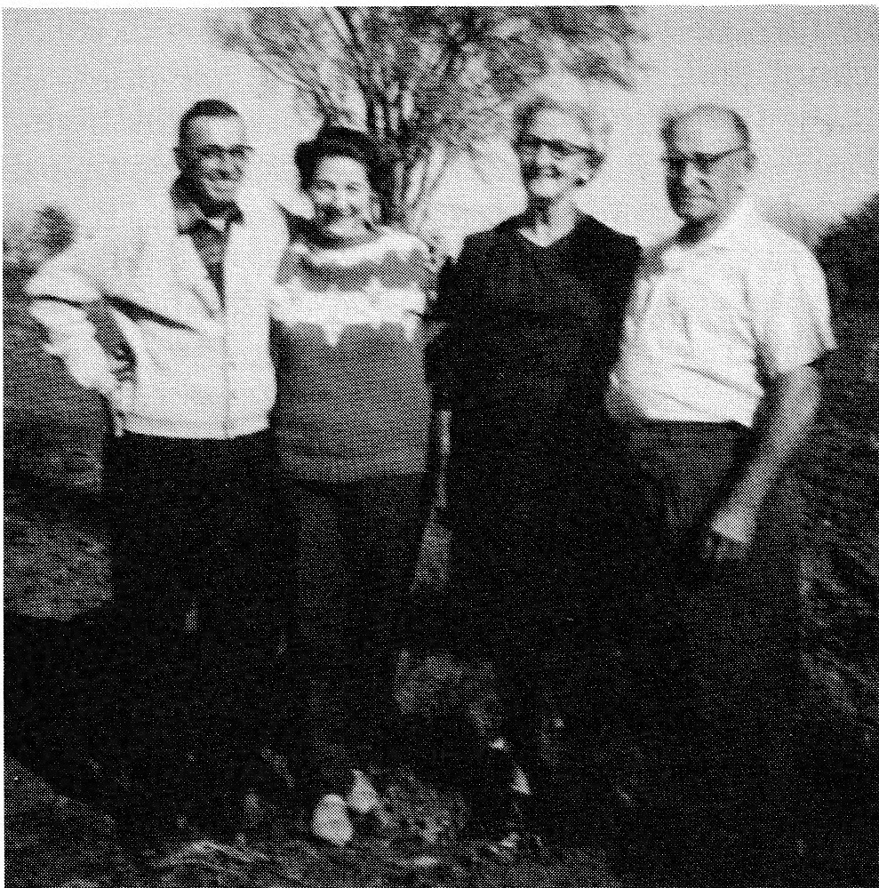
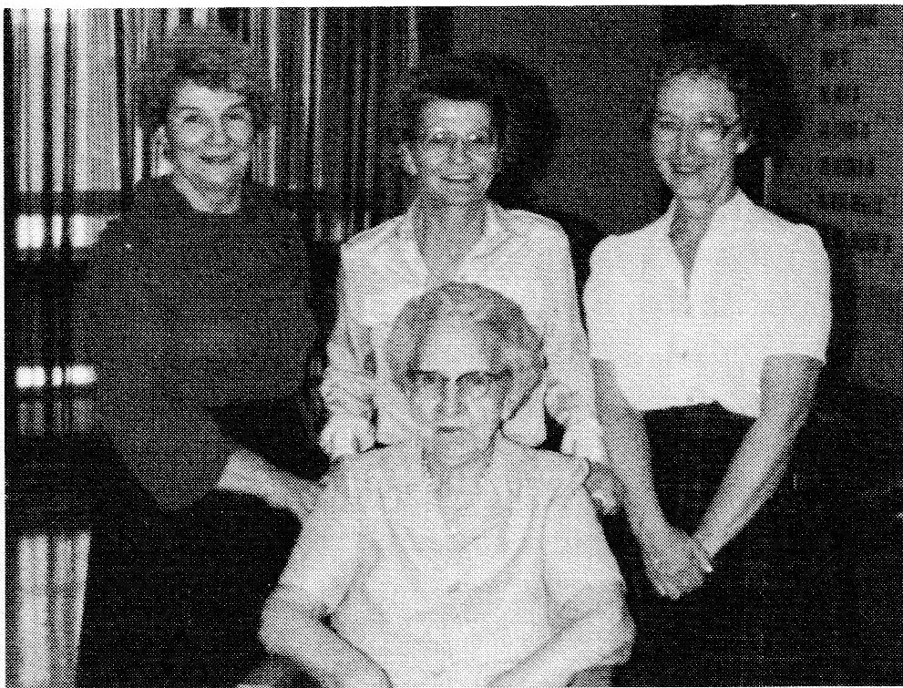
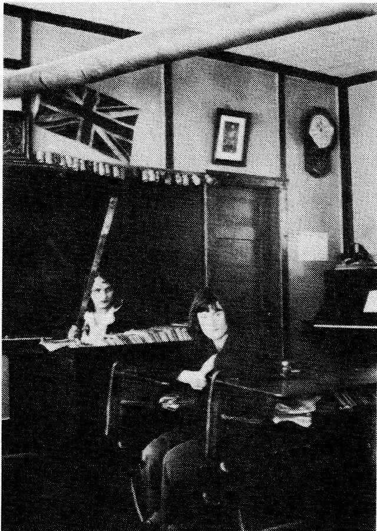
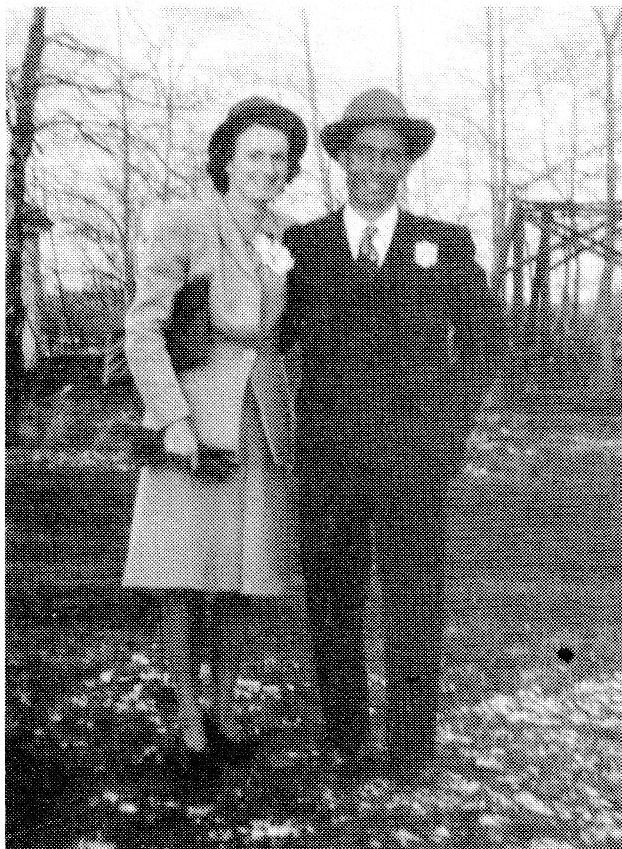
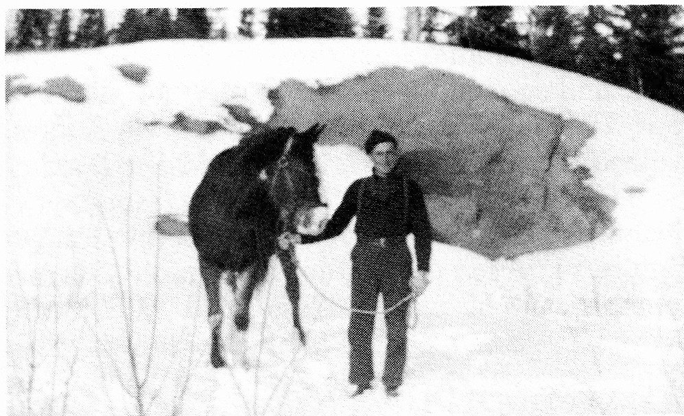
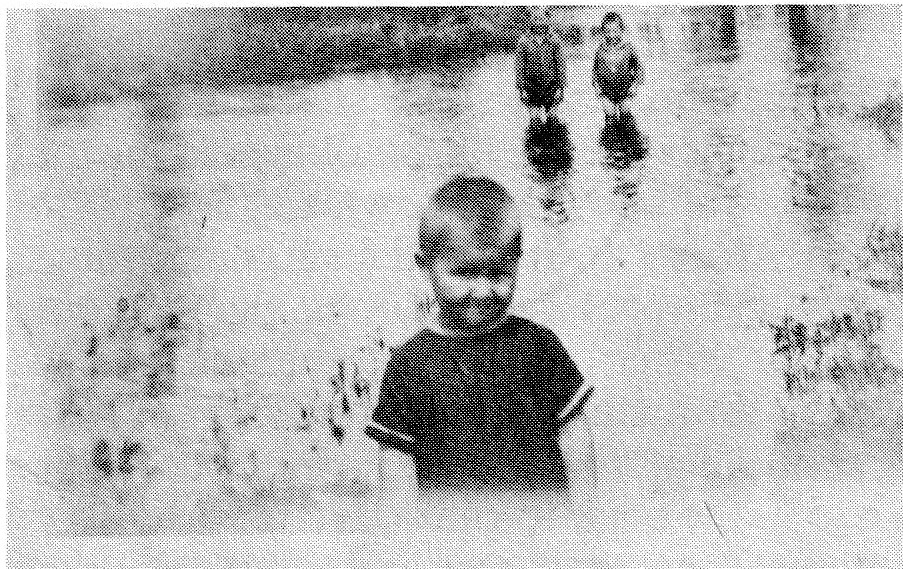
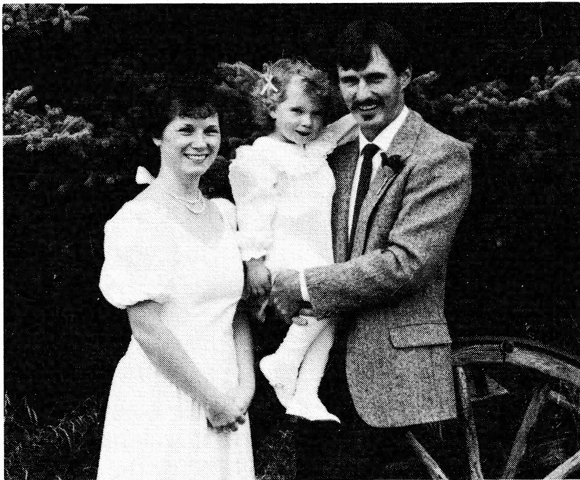
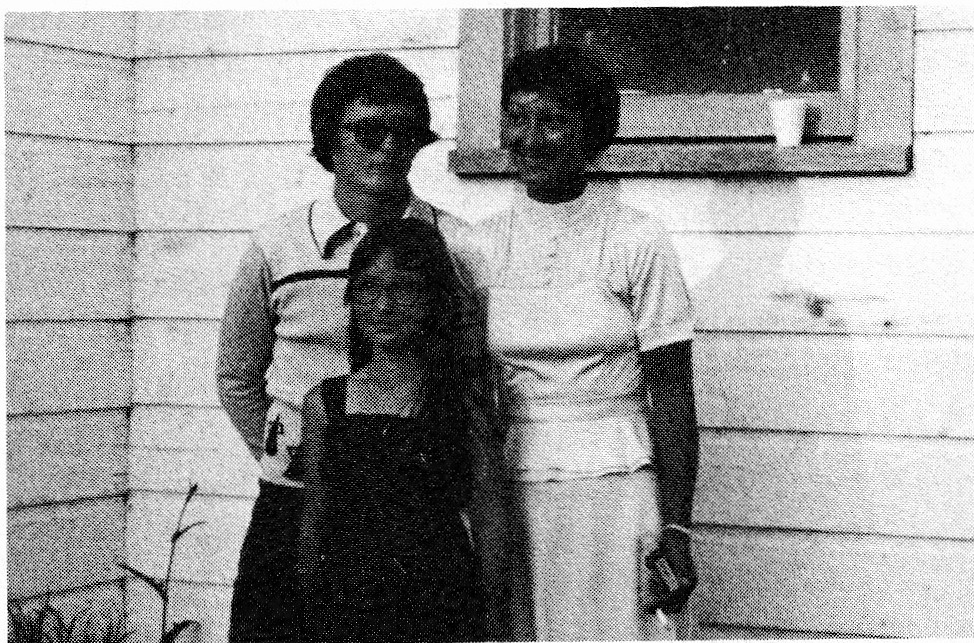
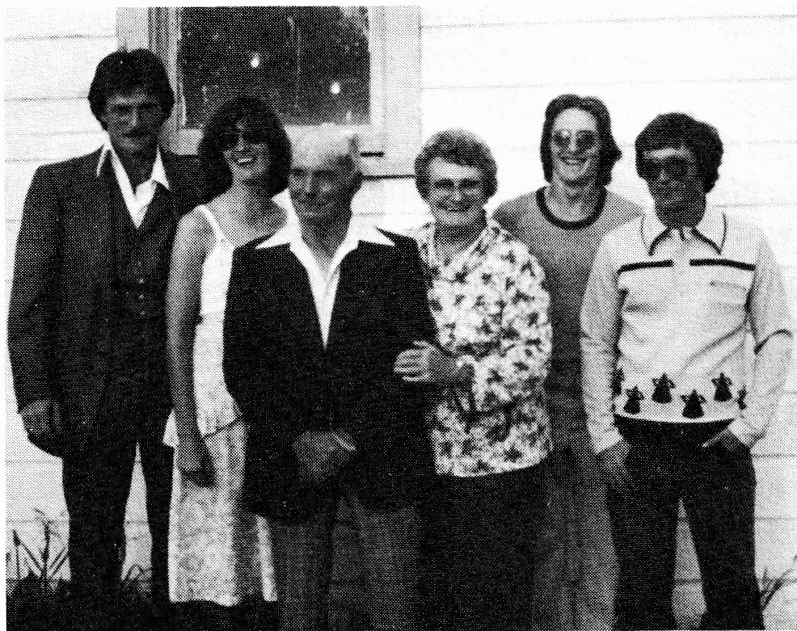

1970. Shortly after, Rachel took up residence in St. Joseph's Villa, Dundas, Ontario. Here she remained except for brief visits to various members of her family. In 1983 she suffered a stroke. She died in early 1985. Mae and Bernard share with us: “Grandma Strasser (Rachel) began her new life on January 16, as a quiet end came to about six weeks in a deep coma, the result of a second stroke soon after her 89th birthday. In accordance with local custom for the little rural cemetery at Kirkfield, Ontario, she was buried after the winter's frost had left the soil she loved, on a bright, breezy May afternoon, with children, grandchildren and great grandchildren present for the occasion.”

GENE AND EDITHE (ALAIN) LESSARD
Gene Alfred Lessard was born December 17, 1916 in Lambert, Minnesota, U.S.A. Gene tells us:
“I was three years old when we moved to Meota, Saskatchewan. All my life I've been a Canadian. I got my call to the Army thru the Canadian Government but when I applied for my old age pension, they told me I was an American.”
“I went to the Fitzgerald school for three years. The spring that Dad and my brother were burnt, I went to school alone with a horse and buggy. We lived about two and a half miles from school. I was only six years old so Ma hooked up the horse in the morning and a cousin, Lawrence Lessard, who was older, hooked up the horse at night so I could drive home.”
“I remember an incident from my first year of school -- before Dad died. At school, the big kids would go to the barn at noon and make the horses kick. We were going home from church one Sunday when we saw that Dad was going to give the horse the line. George and I said, ‘Don't do that; he's going to kick.’”
“Puzzled, Dad repeated, ‘He's going to kick?’ Just then Dick, our horse, did kick -- his legs flying over the dash of the buggy. That's all that was said; we never heard another word until the next Monday. After dinner, there was an awful pow wow coming out of the school. Dad had snuck into the school barn and up into the loft with a line. When the bigger boys arrived and started to make the horses kick, Dad came down and warmed their backsides. The boys never again mistreated the horses and there was never a complaint sent to the teacher either.”
“The next spring a neighbor, about a half mile from home, was burning a strawpile and Dad said to us, Never start a fire, see what it can do.’ Only a short time later, we were to learn just how terrible fire can be. One Sunday afternoon, Dad decided he should move to the other quarter to do some seeding and told the family, ‘We'll go this afternoon to be ready for morning.’ George wanted to go with him so he drove one team pulling the wagon, while Dad was ahead with the four horses and the drill.”
“The next morning Dad got up, started the fire and went to feed the horses. They were staying in a granary 10 x 12 feet. When Dad came back, the fire was out. He grabbed the can which was supposed to be coal oil, but a trapper had stayed there in the winter and he had used gas, I guess. So when Dad threw this on the fire, puff! It exploded! And it kind of blew him out. Then he went back in to get George. He went to the bunk and grabbed everything but he still didn't have George. In the smoke George had gone under the bunk which was an oat bin. Dad had to go back in again and, this time, he found George."
"The wagon load of wheat, which was about sixty bushels (in those days), was by the shack, so with George pushing and Dad pulling, they moved that load of wheat away from the burning granary. Then, they walked two miles to Uncle Fred's place. Uncle Fred was in the barn doing chores when he saw these two people coming. He did not recognize them at first as they were wrapped in blankets. Dad and George both died from their severe burns."
"Later we moved into Delmas. One time Ma had gone -- I don't remember where -- and there was a girl looking after us. The ceiling of our house was made of beaver board; there was no lumber under it. I don't remember what I was doing but I had taken a broom and having hit too hard, I punctured a hole right through the beaver board. Of course, this was the first thing Ma saw when she got home."
"I remember a fellow by the name of Edgar Laflambre who lived in Delmas. He had a Shetland pony and, as long as we lived in Delmas, I always hoped I could have a Shetland pony but I never did get one."
"In 1928 our family moved to Veillardville where we farmed the S.E. quarter of 4-45-4 W of the 2nd. When we came to this country, the road to school from our farm (which is the same farm we live on today) was just a foot wide -- only a walking trail. We often saw moose on our way to school, just off the trail. It was nothing to count ten, fifteen, sometimes even twenty moose in the morning in this half mile. There were deer, coyotes and timber wolves. You could hear the wolves at night, but we never saw them."
"When we wanted to go to Veillardville, we'd cross the bridge up the hill, at Murdoch's, then cut across to Murdoch's corner. There would be a wagon or sleigh trail depending on the season. If you wanted to go to town, which was Hudson Bay, you'd go through Quinn's, through more bush and you'd end up where the T.V. tower is today. The highway, if you could call it that, was a corduroy road. In summer you travelled either
on foot or you rode horseback. We walked to school and, often, we walked the six miles to town. In the spring you couldn't walk the high-way because there was water all over it so you'd take the railroad track and walk the rails. It was always dry and nice."
"Before we left Delmas, Ma had married Louis Strasser. He was more of a carpenter and he worked some on the White Poplar School after we moved to Veillardville. Later he went to Flin Flon."
"Each fall I left school for several weeks to help with harvest. Then I quit in grade seven. By this time, we were living on the same quarter we're on today."
"Times were hard after we moved to Veillardville. Ma worked hard and was willing to try anything that might help her family. One time she wrote away to Quaker Oats in Toronto. There had been an address on the label of the Quaker Oats bag. A fellow with the name McQuarrie was listed so she wrote him. That Christmas they sent a big box three feet high by three feet wide by three feet deep -- all kinds of toys and clothes -- good stuff! Everything was so nice! They did this for about four years. Some years later, when our family was down East, Ma went to see them. She thanked them personally for their kindness to us during those difficult years."
"During the Depression, Ma and us kids were getting a total of $7.00 a month relief. I remember when Joe Morin moved here from the Rosetown area. He said they had been getting $67.00 relief out there and they cut him down to $6.00. But there was cordwood to be cut and some bush work to be done here and, though it didn't pay much, you could work and make a few dollars. The C.N.R. converted the roundhouse from coal to wood heat for about three years to accommodate the homesteaders. By the time I was seventeen, we were living on the north farm. After I did my morning chores, I'd hitch up my team, go to the bush and cut a cord and a half of wood with my Swede saw, then load it on my sleigh. The next day I'd take it to the roundhouse where I'd get close to $3.00 in scrip. This was yellow paper money and you could only spend it in Hudson Bay. You could use scrip to buy anything you needed in town, that is, except liquor. You needed cash when you went to the liquor store so we would take the scrip worth 25¢ and buy a chocolate bar which cost 5¢ The storekeeper had to give us 20¢ change. After a while you had the 80¢ cash that was needed to buy a bottle of wine."
"During those years, things did not improve so we decided to go down East. I drove the '27 Chev that we'd bought from Ralph Murdoch for $75.00. The tires were all up. When we left here, there was three feet of snow. There was a guy who had been working in the bush at Otasquin. He had six horses so he loaded the Chev on the sleigh and pulled it with his four-horse team. Then he loaded the two-wheel trailer, which we'd built, on another sleigh pulled by his two-horse team. Ma, Therese and Mae took the train from here to Wynyard while Martin, Joe and I jumped the freight. We stayed in Wynyard for three or four days -- long enough for me to learn to drive. Then we left for Regina and, by the time we got there, we'd had eleven flats. Joe was getting to be an expert at changing tires."
"On our way East, we went to Minnesota where I helped Uncle Charlie Lessard with the seeding -- three horses on a drill. Martin did other work. Then we were back on the road. We went by way of Chicago. At that time there was a square in the middle of the street for the pedestrians. When someone hollered, 'You're going the wrong way,' I made a U-turn right there in the middle of the square and I passed very close to a few Negro toes with the trailer behind. Several black fists were raised. Later, I took a driver's test in Tillsonburg, as you needed a license to drive in Ontario."
"It was dark when we landed in Tillsonburg so we pitched our tent on an old farm. Martin and I got a job priming tobacco. The bottom leaves (the sand leaves) ripen first. They already had a crew of five other guys who had been picking for two or three days so they were limbered up. But Martin and I were really soft. After my first day's work, I woke up about three in the morning. I was so stiff from being bent over; I told Martin, 'You know, I'll never walk again.' However, each day after that the picking became easier. Ma, Therese and Joe got on tying tobacco. About four o'clock, when our crew finished in the tobacco fields, we had to hang the tobacco in kilns which were about twenty feet high. The tobacco leaves were tied onto four foot slats. These were then hung on 2 x 6 stringers set at various levels. A fellow was needed to straddle the 2 x 6 stringers while another worker on the ground handed the tobacco up which was then passed to the fellow above you and so on. The pay was good -- $2.50 a day -- if I remember
right."
"Martin and I built a little house in Tillsonburg; actually it was more like a garage. We didn't have to pay rent anymore. Martin and (I think) Joe got on at the tobacco factory. I also got on but I only worked a few days because I hated the factory and being inside. It was the beginning of March; so with five dollars in my pocket, I took off for Kirkland Lake in northern Ontario."
"After a while, my money was all gone. I had nothing to eat -- just water. On the fifth day I knew I had to find something so, the first house that I came to, I asked if I could split wood, or could do anything, just so I could get something to eat. The woman who came to the door started to cry. I remember thinking, 'Gee, what did I do?' Then she told me, 'Around Kirkland Lake there are seven mine shafts and there is only one working. My husband has been out of work for two years.' They had five or six kids, too. Then she said she was sorry but she just couldn't give me anything. After that, I figured I'd had enough for one day. The next day was better; I split wood and got lunch. This was the spring of '39, before the war broke out. Finally, one Sunday after bumming around Kirkland Lake, I was walking, still looking for work when a car passed me. Then it slowed down; I started running. When I got in, I saw axes and shovels in the back seat. I thought, 'I'm sure going to ask this fellow for a job.' Then he asked me where I was from. I told him, 'Hudson Bay.'"
"He replied, 'You're just the guy we're looking for!' 'Oh my gosh,' I thought, 'what did I do this time?'"
"He was a foreman for the Hill Clark Francis Lumber Company of Kirkland Lake. In the winter they cut the logs and put them on the river bank. Then, in the spring, the logs were floated down a little river called Blanche River. There was also a dam. At that time, the Company was having problems with one of the guys who had done the logging; he had threatened to blow up the dam so the foreman was looking for someone who was not from the area. I was given the job of night watchman -- to patrol the dam to see that no one came around. I also had to keep an eye on the water level. If it got too high, I had to take a plank out to let some of the water out -- this way it wouldn't go over the edge. I worked there till the end of July. Then I worked at the mill. One day I got caught between a load of lumber and the pile. My leg was broken. It healed quickly and, before long, I was looking for work again."
"This time, I jumped the freight. Another fellow was riding with me and we were going thru the mountains in northern Ontario when all at once we saw a tunnel up ahead. 'Holy smokes, we'll be wiped off the top,' we thought. We both laid flat on the walkway -- on the top of the freight. When the train had passed thru the tunnel, we sat up. That's when I saw the other fellow. I asked him if he was Jim and he said, 'Yes, but who are you?' We were both so black from the coal dust off the steam engine that only the whites of our eyes were showing."
"I got off at Portage La Prairie and worked for a Scotsman by the name of Bob Staube. It was cutting time and my job was stooking. Bob's dad was eighty years old and stood about six foot eight in height. He smoked a corncob pipe but just used the stub. Now I was stooking with this old guy; I was never a good stooker. We'd each take a row. He would sit on the last sheaf and wait for me. I worked like a nigger while he stooked with such ease that he never seemed to do anything. He would tell me, 'It's alright, you're stooking as much as I am.' After stooking, we threshed, then I ploughed. War broke out and I was still there."
"Then I jumped the freight and went to Melfort where I got a job threshing for Oscar Nelson at Thaxstead which was seven miles north of Melfort. Oscar had a D-2 Cat on the threshing machine. I worked there for seven days, then I went back to Melfort where I jumped the freight to go to Tisdale."
Jumping the freight or riding the rods was a common means of travel for the unemployed during these years of the Thirties and early Forties. Gene explains how it was done:
"When the freight was stopped we'd walk to the outskirts of the town. Then we'd catch the ladder, which hung on the side of the train, when it was just beginning to move. The year we left Veillardville for the East, it was nothing to count two or three hundred men sitting like crows on the top of a freight train."
"Of course, we did not pay for our ride but the police were understanding; that is, except for a cop in one place in Ontario. He was named Red and he was rough and mean; he would kick the men. Finally, someone shot him."
"When we got hungry, we'd get off the freight and maybe rob a garden or, if you had a bit of money, buy something to eat. Twenty-five cents would buy a loaf of bread, a pound of butter and a dozen eggs. Outside of every town, there was a little camp where guys slept and ate -- under the sky. There were places where others who had been there before you had used straw or hay and had bedded down. Everyone was the same -- nobody was any better."
"While I was in Tisdale, I remembered that when we went to school, we had heard about the C.N.R. and traffic bridge at Nipawin -- one bridge which was used for both. I thought I'd like to see this. Again, I jumped the freight. After spending a couple of days there, I went back to Tisdale. Then I took out a nickel -- heads, I'd go back to Veillardville; tails, I'd go East. It was heads."
In the years that followed Gene's move back to Saskatchewan, he took up farming and, with time, he began to consider settling down. A home would be nice! Before he'd gone East, he had visited at the Alain home several times -- being somewhat interested in Bertha. However, Gene learned upon his return that Bertha had gone to Flin Flon as had her older sister, Edithe. So he decided to date another girl, Joyce May. Then one day after Edithe returned, he invited her and Verna Cockwill to his farm. He told the girls that he had a lot of strawberries growing on his place. Both girls enjoyed berry picking so, enthusiastically, they accepted his invitation. They were somewhat disappointed when they discovered that what he really wanted was their help in bagging several bushels of oats. However, the girls were good sports and lent a hand. Before long, Gene's Model A was frequently seen parked outside the Alain home. Henri and Alma's second youngest daughter had a beau.
Edithe had come with her family from Delmas some years earlier. She was born in Battleford on December 21, 1917 -- "a Christmas baby" she tells us.
"I remember starting school in the convent because there wasn't any room in the big school -- this was where the little Indians were and we had to put on little moccasins in the morning. Every noon I cried because one of the older girls would hold the gate so I couldn't leave. I wanted to go home with the other kids. We seldom took our lunch as it was only a short half mile to our farm on the outskirts of Delmas."
"Sometimes Mom and Dad would be away and Rolland was supposed to babysit. He would give us a pan of sugar with a bit of water in it and then tell us, 'Make yourselves some fudge. If you hear any noise and you're scared, lock yourselves in the cupboard and we'll let you out when we get home.' That was Rolland!''
"We played a lot in Delmas. One game we liked was called 'Jouer aux Couteau'. It was played with a small knife. It was a spring game; as soon as the ground thawed, we'd choose a place where the grass was thick and we'd start to play -- girls as well as the boys. Each player in turn held the tip of the knife blade on different parts of his body such as the shoulder, the nose, the forehead, the palm of the hand, the finger and so on -- then he'd give the knife a slap which would send it flipping through the air to land, if all went well, with its blade in the ground. As long as his knife stuck in the ground, he could continue with the next part of the body. There were ten or twelve places from which he flipped the knife. On one of Dad's trips to North Battleford he bought a little jack knife for each of us. That year we practised a lot."
"When I was ten we moved to Veillardville. You'd never believe what this country was like back in 1928 -- there was so much bush! Still, we thought this was the nicest place. We could use rafts and we could skate. You could pick all the berries you wanted -- strawberries, raspberries, gooseberries, chokecherries and pincherries. We'd go thru Quinn's, take a milk pail and fill it with strawberries. The country was also a haven for blueberries. Everybody would take off two or three days and go camping at Greenbush. It was only seven miles but it seemed further, probably because we travelled with a team of horses and wagon then."

"We sang a lot at home. Mom could be making beds and Dad would start singing a French song and Mom would join in and sing the harmony. They knew a lot of songs. It took Mom a long time to learn a song, maybe this was partly because Dad would make up his own words. But once Mom knew a song, she never forgot it. Dad learned all the new songs. Many times I learned a hymn on the way to church. One time we were having a retreat and the visiting priest asked if we'd sing a particular hymn. We didn't know it so Dad went to Veillard's where Mrs. Veillard played it. That night, on our way to church, Dad said, 'We're singing this hymn tonight.' I remember telling him that I didn't know it. He said, 'Well, you can learn it while we walk to church.' Sure, I learned it but, when we got to church, the only ones who sang it were Dad and I. Dad said, 'Well, they were all supposed to sing it.'''
"We always went to church on Sundays. During Lent, we said the rosary each evening. The family would gather around the kitchen table and, kneeling, they would recite the prayers while Mom or one of the older children would lead. I remember when we were in Delmas. We always had supper early, then we'd say the rosary. The older boys, Smokey and Louis, were always in a hurry to get to the village. They'd stop at Aunt Melvina's and Uncle Frank's to pick up their cousins. Now this aunt's family were later with their evening meal so Smokey and Louis usually ended up saying the rosary all over again because it was also the custom of Aunty's family and she was not about to allow her boys to leave before prayers."
"This practice of saying the rosary in Lent was also common in the Lessard home. I came to know Gene better after we moved to Veillardville. For several years I worked out. I went to Flin Flon three different times -- the first time I went to work for my sister, Yvonne, when her son Bruce was born. Later I worked for Bertha, when Norbert was born and, again, when Roger was born. And I did housework for a lot of other people in Flin Flon, too."
"When I returned home I cooked for Dad at his sawmill. In 1943 his mill was seven miles southwest of Veillardville. That year, a bear had been around the bush camp. On one visit, it had pulled some slabs off the icehouse. This one night I went to bed and, for some unknown reason, I kept watching the window. Finally, I thought, 'I'll never go to sleep this way.' I had just turned to face the wall, when bang! The bear hit the window! Pieces of glass flew into the kitchen; some were even found in the dining area. I jumped out of bed, blankets all wrapped around me, yelling my head off. Dad slept at the other end of the cookhouse in the same building. He never even heard me holler. But someone woke him. That night we had a shirt-tail party -- Dad was in his underwear and so was old Szmul -- both of them were standing in the kitchen, look- ing out the window, trying to catch a glimpse of the bear but he had gone."
"The next night, Dad said he'd sleep in the kitchen and he told me to sleep in his bunk. I told Dad, 'And if the bear comes back, you won't hear him.'"
"Dad's reply was, 'Maybe we should put a string on my big toe and you can pull it if the bear comes back.' Anyway, I got into Dad's bunk. The following night the men saw the bear coming to camp so several of us ran outside to see it. Ham Wilcox shot the bear. Dad was never afraid of bears. He used to leave our home when it was pitch dark and he'd walk alone, the seven miles through the bush back to his camp."
"That winter Gene worked at Dad's camp and I got to see a little more of him. We went to dances a lot and we went to shows. Then one evening we decided we'd be married in October so we went to see the priest. In those days you stretched your money as far as you could. The priest told us that if we had the banns announced in church, we would not need to buy a licence. He asked me if I had ever worked out and I told him I had worked in Flin Flon. A short time later the banns were announced in Flin Flon on a Sunday. Mom was in church with Bertha. Mom nudged her, whispering, 'Is that my Edithe?' When Bertha nodded, Mom replied, 'Well, I've got to go home!'"
"Gene and I were married October 25, 1945 in the Catholic Rectory at Hudson Bay, Saskatchewan. Gene wore a black pinstripe suit while I wore a pale blue suit with navy hat, gloves, shoes and purse to match. Father G. Van Vynckt officiated while Joe Lessard, Gene's brother, and Yvonne, my brother's wife, were our witnesses. Mrs. Veillard and others sang at our wedding. After a nice supper at my home, we had a dance at Veillardville Hall with Albert Bernier, Omer Cartier and Art Nice playing their fiddles."

"In those days, if you had a dance, your friends didn't shivaree you. On our way home from the dance we stopped at my home to pick up a few of my things before going to our little house, and the entire group from the dance fol- lowed us ... Joe Lessard, the Davidson girls, Frank Quinns', Yvonne and Rolland, Louis and Clara, Albert Bernier, among others -- there were about forty people in Gene's little two- room shack which measured 14 by 18 feet."
"This little house was our first home. It cost Gene ten dollars when he bought it from the Government some years earlier. It had once belonged to Chester Cockwill."
"One of the first things I did after we were married was to knit Gene a pair of mitts. That fall he had been hauling grain to town, making two trips a day with his team, and his hands were freezing."
"In the winter I cooked for Dad at his sawmill, and Gene worked with his team at the camp, too. Dad had given us a cow and she calved in the spring. On our return from camp we discovered water all over. We came back with the wagon, the cow tied behind and the calf in the wagon box."
"Wayne was born in the summer of 1946 on August 23. We put his little crib at the foot of our bed. Gene had put the bedstead together with the post maul. It was tight and, after that, I was never able to pull our bed out. We lived in our little house for five years. When we were expect- ing Carol, we began to build."
Gene tells us:
"Fred Bradley was the carpenter. He started with the basement, putting in the forms, right to the shingles, gyproced the whole inside. His bill was $320.00 to do all that. I chased him for two months after, for his bill; I wanted to pay him. Fred thought he was charging us too much but we didn't think this. Before we put the gyproc on, Stewart Hawke who had a lumberyard called me in and asked what we were putting inside. I told him, 'Gyproc, but there's no money for it.'"
"Old Stewart Hawke told me, 'I tell you what I'll do -- I'll give you all the gyproc, the tape, the nails, crack filler and we'll deliver it. You pay me after the harvest.' But that fall, we didn't har- vest! The bill was $240.00. In order to borrow the money, I had to give the banker clear title to my quarter section and that wasn't enough; he said he also needed the title to my eighty acres as well."
Edithe tells us:
"We moved into our new house in October 1950. That winter Martin, Floris and girls moved into our little shack. When the men went to camp, Floris and I each had our own cow to milk. Each of us had a dog on the farm, too, and on Fridays, if Gene was the first of our men to come home, our dog would go to meet him, but if Martin was coming first, then his dog would go. Sometimes the dogs would go as far as two miles to meet their owners, but they always knew which of our men was coming first. The men would leave on Mondays to return to camp."

"For eight years Gene went to the bush each winter. In those years we didn't have a wellhouse and, usually, there'd be several inches of snow during the night. So, each morning, I would have to find the well, then water the cows. I'd leave Wayne in the shack while I milked the cow. One evening when Gene was at camp, Floss Cockwill and Verna came to see me. They stayed till mid- night, had lunch, then left. I got ready to nurse
Wayne and I looked up. There was Floss looking through the glass on our door. I asked her what she wanted. She said, 'Oh! I just wondered what you did when you were all alone. I couldn't stay alone like this.'"
"Another time when Gene was at the bush, I had hitched the dog to the sleigh and, with Wayne, I went to Smokey's. Smokey told me that there was a good show on in town and asked if I'd like to go. 'Sure,' I said, 'but I've got the dog.' Smokey suggested I send him home, which is what I did. When we got to the theatre, we discovered that all the men from camp were there, too. Their roads were open. That night Gene had a ride back to camp, but it was differ- ent for me; our road was not open. Smokey dropped me off at the highway and I walked the half mile home, carrying Wayne. He was about five months old and a dead weight in my arms. I was glad to put him down when I got home. Then I went back out -- I still had my cow to milk."
The first winters that the Lessards and the Alains spent in Veillardville were very cold. There was never any wind; there was so much bush. The snow was so hard that they could walk on top of it all the way to school. They didn't dare leave water in the basin overnight because they'd have a block of ice in the morning. The temperature would get as low as -60° F. It was that cold the morning the Cross Hotel burnt. Gene was sleeping in town at the time because he'd been hauling ice for Mrs. Tessier, the store- keeper. He tells us:
"I went to get my team which was stabled at Turcotte's barn and I found it was very bright out. Later I learned that the sky was lit up because of the fire."
"Besides hauling ice, I also worked at the Planer hauling lumber with the tractor to the piles. I had a brand new '52 Chev truck and I left it at the school corner because the road wasn't open to the farm. It was -30°, -40° and -45° F., but that truck always started in the morning -- it was never plugged in. In later years I drove the school bus for Donald Morin four months out of each winter. This lasted about four winters."
"Each year our little creek, that runs east, would flood. It seems like it always rained the first of July and, along with the spring run-off, the little creek that is only five feet wide would overflow its banks and swell to a hundred. Uncle Albert passed away in 1954. It rained and rained the day of his funeral. The bridge was washed out, so that when my cousin, Lawrence, and his wife went to return home, they had to go around by Weekes and Somme. Even then, there was one bridge from which all the top planks were gone; they had to cross on the stringers."

"This country can be very wet at other times, too. One fall we were cutting oats. George Quinn had a WD-9 on a 10 foot power take-off binder. He couldn't pull it. So we cut a barrel and opened it up (3 x 6 ft.) and with that tied to the hitch, and part of the binder on the barrel, we had Ralph Murdoch on his D-2 Cat hooked on the front. We made ruts a foot and a half deep. There were only 10 acres like that -- which I stooked -- but we didn't dare get on this piece till after freeze-up. I knew that if we had ever fallen in those ruts with a sleigh, we'd never get out. We made sure we went crossways. That was one of the wettest falls!"
"Another fall I pushed Smokey's combine. He had a 10 foot Massey and I had a DC-4 Case with a push pole on it. Then with chains on we went around, maybe an hour, cutting what wheat we could. It was dinner time, so we stopped. I took a pail and went up in the hopper to take some of the wheat out. It looked just like brown sawdust that had heated. I gave some to the pigs; pp-ff -- they shook their heads and spit it out! Then I gave some to the chickens and they backed away from the stuff. It was sour and not worth anything. Old Menard used to say, 'You know wheat with eleven corners is not very good.'"
"Any new country takes about four generations before the land is opened and developed. It was no different in the Veillardville area; farming was a constant struggle in the early years. If you got a few dollars, you had to put it back into the land and grub some more. Not long after you broke it, you found you had wild oats. When I got this quarter, there was $800.00 against it -- oil, gas, taxes and relief. I didn't have $800.00 but, with time, I paid it off and finally got clear title to the quarter."
Gene and Edithe experienced other difficulties. Edithe explains one incident when they had two children; Wayne, who had just turned six and Carol, who was fifteen months:
"It was 1952, in the middle of the canning season. Darlene was here and I was washing clothes, getting her ready to go back to Flin Flon. At noon, I got the shivers so I told Darlene I was going to lie down and finish the wash later but, if I couldn't, she would have to. I went to see Dr. Silver who diagnosed a strep throat and gave me penicillin medication. I came back home for a week, but nothing helped. I returned to see Silver. He wanted to put me in the hospital, but there was no room. So he asked me if there was some place I could stay in Hudson Bay. I went to Gene's mother's house. It was very cold because there was no one there at the time. Later that day, Silver discharged a patient so I was admitted to hospital. Again, I was given penicillin. My ankles had started swelling and, by the next day, I had a hard time getting up to go to the bathroom. Silver had realized by this time that it was rheumatic fever. He said, 'We've given you enough penicillin to cure three patients of pneumonia.' But he figured that once the virus got in your system, it was very difficult to stop. I was in hospital for seven weeks and there was no Medicare then. For many weeks, after I was home, I couldn't lift. It was harvest -- the worst time for Gene -- Mom came and cooked for him."
"That fall Wayne started school. He always walked the half mile but he would have liked a ride. One morning Gene saw him just standing by the gate so Gene hollered, 'What are you doing? You're supposed to be going to school.' Wayne told his dad he was waiting for a ride. Both Wayne and Carol went to White Poplar for their elementary schooling, then on to Hudson Bay for their grades nine thru twelve. It was different for Lee and Blair, our younger two. Our school was closed so each of them took grades one thru twelve in Hudson Bay."
"I remember one time our kids were having a dispute over 'toast'. Apparently one of the boys got mad and threw a table knife. The other boy ducked and the knife hit the chrome and shattered the glass on the dial panel of my stove. When Gene and I got home, we saw the broken glass. Now, the kids had been getting ready to enter a parade which was to be held in town the next day. Carol had made an outfit for Blair; he was going to be an Old Lady and Lee, the Old Man. They had planned to take a two-wheeled cart and pony. They never got to go to the parade." Edithe laughed as she concluded her story.
Like others, Gene has served on various boards both in Veillardville and Hudson Bay: Credit Union, Co-Op, Wheat Pool and Church, among others. Edithe has belonged to the C.W.L., she sang in the Church Choir for years, and worked for the Community Club. She and Gene have made dozens of spudnuts for the 4-H Club when their children belonged.
Today they take life a bit easier. Gene tells us they have spent the past four winters in Phaar, Texas, U.S.A.:
"The first spring we went south to see the place and to visit Bertha and Paul. There was a place up for sale, which we put a bid on, then bought it. It was a fully furnished trailer -- even with dishes. We motor out, leaving home the beginning of January and usually return around the end of April. Phaar is wet and damp in January; it's their winter. There are only forty-five trailers in the entire court so we know everyone. There are a lot of activities ... shuffleboard, cards, dances, and coffee is served each morning at the Seniors' Hall which belongs to the trailer court. While we enjoy Phaar for three to four months of each year, we are happy to return to our farm in Saskatchewan. For us, this is home."
Gene and Edithe concluded with the following facts about their family:
Wayne, born August 23, 1946, married Lynn LeBlue in December 1966. They have two girls: Shonna, born July 22, 1968, and Melanie (adopted) August 1, 1979. Wayne and Lynn live in Lloydminster where Wayne is employed.

Carol, born May 25, 1951, married Mike Todor December 1978. They have a girl, Rebecca, born June 13, 1979. Carol runs a fitness centre while Mike manages a photo shop and is a photographer. They live in Drumheller, Alberta.
Lee, born November 5, 1955, married Pamella Herrod, September 20, 1986. Pam has a little girl, Renee, born March 31, 1983. Lee and Pam live in Hudson Bay where Pam works at Simpson Timber Co. while Lee farms the home place at Veillardville.

Blair was born March 2, 1958. He is presently working in Saskatoon as Production Manager of Dew-Little Industries Inc. which manufactures and sells a new type of siding. It has the insulation bonded to the siding. Blair resides in Saskatoon, Saskatchewan.
